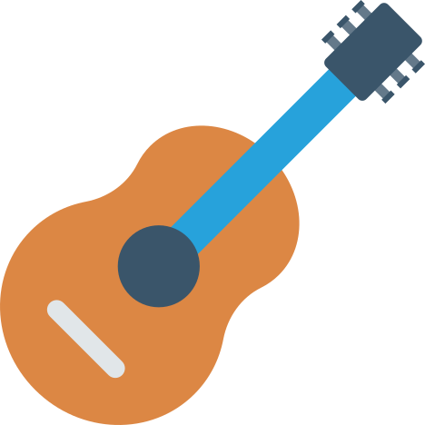
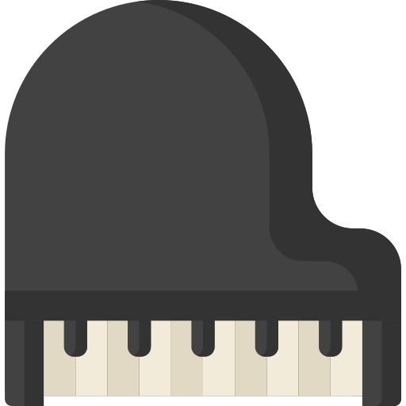

Hobbies And Passions
What I like to do
Like many children of my age I have a lot of passions. Some of them I discovered when I was young and others I got when I went to high school. Next I will try to introduce you, as short as possible, to the most important of them.
Guitar
I got this passion in general school and she started after I joined in a small band, made up of few friends. I followed for a while guitar lessons, hoping to become better and better. Seeing I like to play, my parents bought me, around the 7th grade, a classic guitar, the one that I use even today. I do not go to classes anymore because high school is taking me a lot of time, but sometimes I repeat at home or play at different events.
Informatics
It is my latest passion. Going to Mathematics-Informatics profile and not knowing much about it, I can say that this attracted me relatively quickly. Because I like to know almost everything about technology, I want to learn more about what is behind her.

Video Games
I think this is my biggest hobby of all and, in the same time, one of the oldest hobbies. Almost everyone how knows me know that I spend a lot of time in front of my computer. Beside the fact that I know this takes me a lot of time, I still do not stop playing games beacause I like this very much and it makes me felling better.

Astronomy
Since I was young I liked the exact sciences, but among those attracted me the most is astronomy. All the time I asked questions about what is happening outside of the Earth and amazes me the beauty of the Universe, with all his the planets, stars, galaxies and unexplainable phenomena.
Puzzles
This is one the passion that I think I will have it my entire life. From a younger age I liked to solve puzzles, no matter how difficult they were. I am currently trying to solve a puzzle of 3000 pieces, but I still have a lot of work to do until I finish it.

The Piano
This was a old passion of mine, which unfortunately I am not practicing anymore from 2nd grade. I took lessons at the Children's Club and at the Music School in the city, but I think because of the age I gave up, without thinking about consequences, which I regret now.
Painting
That is more a hobby than a passion. Although I took lessons when I was little, now I am no longer used to drawing. Anyway, when needed, I always enjoy drawing something, whether he's just in the pencil or in color.

Access my contact page or visit me on